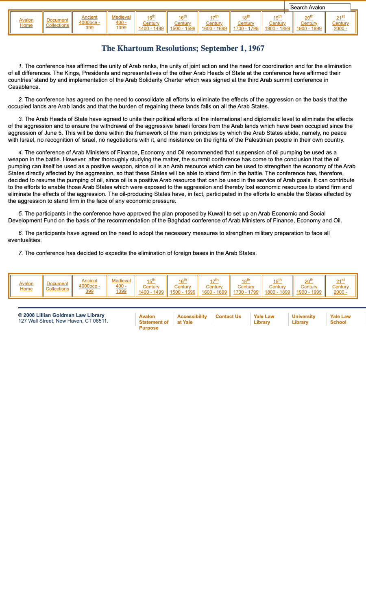

21:28 · 5 OPERE
Know the facts: The Palestinian narrative vs. history.
Il filo del discorso
Una guida israeliana che si presenta con il nome Oren propone la propria lettura del conflitto israelo-palestinese. Rivendica una posizione intermedia fra gli schieramenti politici e annuncia tre questioni: occupazione, insediamenti e rifugiati. La sua pretesa di esprimere l’opinione dell’israeliano medio è una scelta retorica del contributo, non il risultato di un sondaggio. Il video è un intervento autonomo in inglese: la voce non viene identificata con quella di Dr Divago. La prima parte contrappone una ricostruzione della narrazione palestinese alla storia proposta da Oren. Il percorso attraversa dominazioni antiche, luoghi sacri, immigrazione e acquisti di terra nel periodo mandatario. Oren collega confini e denominazioni territoriali al colonialismo europeo e arriva a negare la continuità dell’identità nazionale palestinese. La scheda documenta questa posizione controversa senza trasformarla in una conclusione storica: l’esistenza di una popolazione e i suoi diritti non dipendono dall’aver posseduto una moneta o uno Stato sovrano in un determinato secolo. Anche il quadro demografico richiede di distinguere immigrazione e crescita naturale. Il discorso passa al piano di partizione del 1947 e alla guerra del 1948. Oren distingue fughe, evacuazioni ed espulsioni dei palestinesi, ma inserisce il loro esodo in un confronto con altri spostamenti forzati del Novecento e con le partenze degli ebrei dai Paesi arabi. Critica poi il sistema di assistenza ai rifugiati palestinesi e il riconoscimento dei discendenti. I confronti quantitativi sono proposti dal parlante senza un apparato verificabile; le regole UNRWA e UNHCR smentiscono che la continuità della protezione nelle generazioni sia un’eccezione riservata ai palestinesi. La sezione su occupazione e insediamenti richiama la carta di Hamas del 1988, la nascita dell’OLP, Hebron, il ritiro israeliano da Gaza e la risoluzione di Khartoum del 1967. Oren sostiene che l’ostacolo decisivo alla pace sia il rifiuto di Israele, mentre attribuisce agli insediamenti un ruolo secondario. È una tesi politica da distinguere dallo status giuridico dei territori: l’amministrazione palestinese di alcune aree non elimina automaticamente il regime di occupazione. Nella conclusione la spiegazione si allarga alle società a maggioranza musulmana, ai diritti delle donne e delle persone omosessuali, alle minoranze cristiane e alla libertà di espressione. Un aneddoto attribuito a un comico australiano accompagna il passaggio. Queste generalizzazioni restano giudizi di Oren e non descrizioni dimostrate di un’intera religione o popolazione. L’auspicio finale lega la pace al riconoscimento di Israele e a maggiore democrazia e tolleranza nella regione.
I libri nel discorso

Bibbia
Copertina: San Paolo, 2014 · Nuova Versione dai Testi Antichi · edizione di riferimento
Riferimento ricavato dalla trascrizione automatica.
Passaggio 2:39 ↗ · Fonti e libro ↗
Corano
Copertina: BUR Classici, edizione aggiornata
Edizione con introduzione, traduzione e commento di Alessandro Bausani, a cura di Layla Mustapha Ammar. Anno della ristampa non dedotto dalla copertina; nessuna edizione attribuita al video.
Riferimento ricavato dalla trascrizione automatica.
Passaggio 2:45 ↗ · Fonti e libro ↗
Future Government of Palestine — Risoluzione 181(II) e piano di partizione
Identificazione probabile
Prima pagina della risoluzione: Adottata il 29 novembre 1947, 128ª seduta plenaria; riproduzione ufficiale bilingue inglese/francese, pagina iniziale 131, con piano allegato.
Rendering della prima pagina del PDF ONU, pagina 131 della raccolta, con testo bilingue inglese e francese. Non è una copertina libraria. Il piano prevedeva due Stati e un regime speciale per Gerusalemme; non viene confuso con i confini successivi alle guerre.
Riferimento ricavato dalla trascrizione automatica.
Passaggio 7:07 ↗ · Fonti e libro ↗
Carta di Hamas del1988 (The Covenant of the Islamic Resistance Movement)
Identificazione probabile
Inizio del testo della carta 1988 nell’archivio Yale Avalon: Carta18agosto 1988 · traduzione inglese conservata da Yale Avalon
Schermata autentica dell’inizio del documento pubblicato da Yale, con titolo, data e testo. Non è un frontespizio PDF, un indice bibliografico o una copertina ricostruita. La pagina documenta criticamente un testo antisemita storico e non ne avalla contenuti o obiettivi; la versione esatta consultata dagli interlocutori non è accertata.
Riferimento ricavato dalla trascrizione automatica.
Passaggio 13:08 ↗ · Fonti e libro ↗
Khartoum Resolution, 1 September 1967
Riproduzione nativa della pagina Yale Avalon con la risoluzione in sette paragrafi; non facsimile originale del 1967 o copertina libraria.: Riproduzione web integrale della risoluzione di Khartoum del 1 settembre 1967, nella raccolta documentaria Avalon Project della Yale Law School. Pagina pubblica della Lillian Goldman Law Library, con titolo e sette paragrafi del documento. Non è un facsimile dell’originale del 1967 né una copertina libraria. Il § 3 comprende anche il ritiro dai territori occupati dal 5 giugno e i diritti del popolo palestinese.
Testo storico del 1967 riprodotto in una pagina della raccolta Yale Avalon; data del documento, impaginazione web e acquisizione del 2026 sono distinti. La fonte ONU ne attribuisce l’origine alla League of Arab States.
In the Khartoum Resolution 1967, before the settlements, the Arab leaders declared no peace with Israel, no recognition of Israel, no negotiation with it.
Passaggio 16:14 ↗ · Fonti e libro ↗